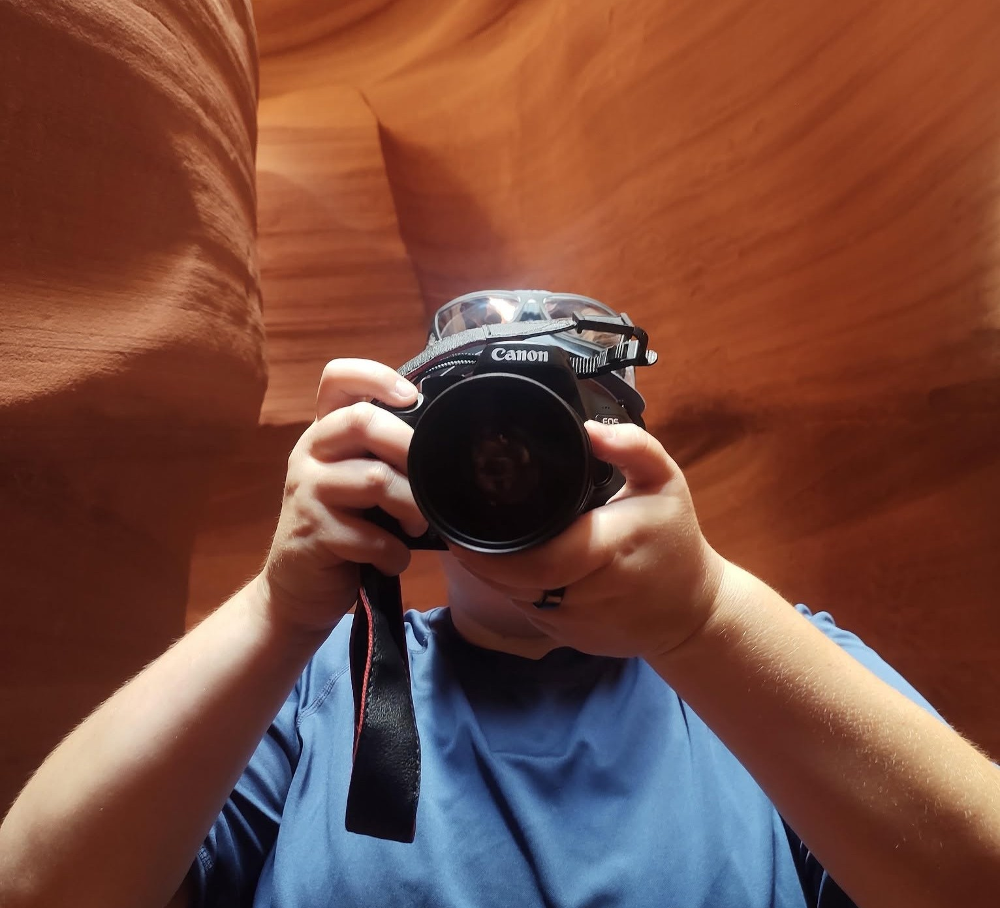

My name is Halie. I have always had a passion for photography, but I officially started exploring it in early 2024. I mainly focus on wildlife, nature, and pets, but I am continuously learning and expanding my creative horizons.
Over the past few years, this hobby has not only brightened my days, but has also connected me with so many wonderufl people through the shared joy of what I capture. I still have a lot to learn, but I'm excited to share my work with a wider audience.
I hope you enjoy browsing my gallery, and I would love to hear your thoughts and feedback!
Thank you for visiting!